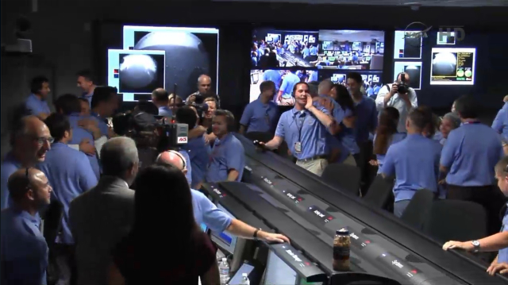

Before diving into what Collaborative Telepresence is all about let's first discuss what Telepresence entails. Telepresence refers to the creation of visual and physical stimuli through the use of various hardware for the user to interact with the environment from a remote location. Examples of such technologies include the Mars Rover, who would be controlled by individuals here on earth and be able to traverse the landscap of mars and transmit visual data through picture or audio.

Depicted above is a NASA control room monitoring Mars Curiosity Rover
Now Collaborative Telepresence entials the use of hardware and software to enable users to physically interact with remote locations and stimulate various senses souch as sight, sound and even touch. This can be achieved through various sensors and a connection with the user and whatever telerobot is being used. Now I'm sure just discussing the use of such technology sounds nothing short of science fiction, reminiscent of movies such as Surrogates or Avatar, however this technology is very much alive and upcoming. Large corporations such as Microsoft have been investing in this upcoming field. What Collaborative Telepresence is all about is generally just providing individuals with experiences without their physical body needing to be there.
Now with the introduction of Collaborative Technologies, there are a multittude of various sectors that would be impacted and some of which will be discussed within this website. Some of these sectors include but are not limited to:
Copyright © 2019 Chavodon Industries. All Rights Reserved